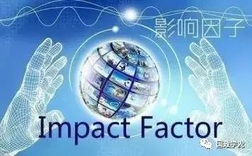

收录于合集

【核心提示】期刊影响因子是计算期刊前两年的被引数量与发表论文数量的比例。首先，期刊影响因子的高低并不能代表单篇论文质量或创新性的高低，即“以刊评文”存在逻辑上的错误嫌疑。其次，期刊的影响因子也不宜跨学科比较。影响因子高低取决于所属学科的发展情况，学科越不成熟，越需要相互印证，导致引用就多，影响因子就高。但是不同学科其文献更新速度、学科发展情况存在差异，靠单一影响因子来进行期刊评价甚至跨学科的期刊评价，就会有失公允。再次，从引用行为本身来看，也会受到出版时滞、传播途径、名人效应等各方面的影响。最后，也不排除有些期刊为了提高自己的影响因子，人为要求作者强制引用该刊文章甚至与其他期刊建立互相引用联盟，扩大自己的被引次数。开展评价工作，需要构建科学的评价指标体系，基于多指标开展全方位、多角度的诊断，从而判别优劣。

2016年7月11日，汤森路透公司宣布以 35.5 亿美元出售旗下包括SCI在内的知识产权业务和科学信息业务（IP & Science）。美国微生物学会（ASM）接踵而来，宣布旗下期刊不再支持影响因子。之后，期刊及出版界（包括Nature的国际顶级期刊）联合发文呼吁期刊出版商对期刊影响因子不予重视，准备重塑期刊评价体系。本文分析影响因子何以深受诟病，并探讨如何构建中国特色的期刊评价体系，强调中国学术界应当乘势而上，在构建评价体系中发出自己声音。
1 影响因子为何会引起学界争议
影响因子（Impact Factor，IF）是汤森路透公司出品的期刊引证报告（Journal Citation Reports，JCR）中的一项指标数据。该指标于1963年由加菲尔德（Garfield）等提出，其目的是为了《科学引文索引》（Science Citation Index，SCI）数据库在遴选期刊时更具有可操作性。
一个期刊的影响因子等于，该期刊在前面两年发表的源刊文本（source items）在当年度的总被引用数，除以该期刊在前面两年发表的论文（article）总数量。该指标综合考虑了发文量和被引次数两个因素，在本质上是一个均值型算法，即期刊前两年发表论文的篇均被引次数。理论上来讲，一种刊物的影响因子越高，表明该期刊的影响力越大，所发表论文传播范围也更广。
鉴于全球每个科研领域和每个学科中都有大量专业期刊，科研人员都希望将自己的学术成果发表到能有较大概率产生更大影响的学术期刊或传播平台上去，以发挥更大的效用、产生更大的影响，这本是无可厚非的事情。基于科研人员的这种诉求，汤森路透公司通过影响因子指标所构建的SCI、SSCI、A&HCI数据库，实际上是基于期刊的传播范围和使用率构建的一种论文检索工具。
但是，在实际的科研活动过程中，这一索引工具的原始功能被逐渐异化。在研究生学位授予、科研人员职称评审、课题申报甚至研究机构评价与排名中，都把在SCI等引文数据库中所收录期刊上发表论文作为一项重要指标。如2003年上海交通大学推出世界大学学术排行榜和2004年《泰晤士高等教育》推出排行榜，都将SCI论文引用（Citation）情况作为其中的核心指标。2012年下半年，教育部学位中心进行了第三轮学科评估，将基本科学指标数据库（Essential Science Indicators，ESI）高被引论文数量纳入指标体系。不论是大学排名还是学科评估，其结果又会进一步影响主管部门对大学的评价。因此，SCI逐渐从一个索引工具异化为一个评价工具，各研究机构和高校基于SCI收录期刊的影响因子，制定了本单位的科研人员绩效考核办法，进一步放大了期刊影响因子的评价导向效应。此外，这又引申出来一个现象，即许多科研机构、高校甚至学术同行越来越依赖于以期刊影响因子来评判一篇论文甚至作者本身的科研水平，进而影响他们的职称评定和获取科研项目资助等机会。这也就是通常所说的“以刊评文”、“以刊评人”的评价怪象。
影响因子深受诟病的另一主要原因，要从其算法本身的局限性说起。期刊影响因子是计算期刊前两年的被引数量与发表论文数量的比例。首先，期刊影响因子的高低并不能代表单篇论文质量或创新性的高低，即“以刊评文”存在逻辑上的错误嫌疑。其次，期刊的影响因子也不宜跨学科比较。影响因子高低取决于所属学科的发展情况，学科越不成熟，越需要相互印证，导致引用就多，影响因子就高。但是不同学科其文献更新速度、学科发展情况存在差异，靠单一影响因子来进行期刊评价甚至跨学科的期刊评价，就会有失公允。再次，从引用行为本身来看，也会受到出版时滞、传播途径、名人效应等各方面的影响。最后，也不排除有些期刊为了提高自己的影响因子，人为要求作者强制引用该刊文章甚至与其他期刊建立互相引用联盟，扩大自己的被引次数。
2 评价体系该何去何从？
伴随着各界对以“影响因子”为主要指标进行科研评价这一现象的批判，汤森路透近些年又新推出了一些期刊评价指标，包括期刊规范化引文影响力（JNCI）、期刊期望引文数（Journal Expected Citations）等新指标。从计算方法上来说，期刊规范化引文影响力和期刊期望引文数是对以引文为主导的评价体系的一种改良，是旨在对同一类型学术成果中的超过平均水平并提高期刊被引频次的研究成果的一种发现算法，旨在评价学术成果在其所属学科或期刊（群）中的表现情况。
自从科学研究作为一种科研活动和职业正式诞生以来，围绕科研活动的评价问题就层出不穷。特别是在影响因子诞生至今，科研评价从最初的定性评价转向定量评价并在这条道路上越走越远，出现了各种类型的评价指标，它们都试图解决科研活动和学术研究的有效管理问题。同时，评价本身也是一项极具导向性的工作，背后隐藏着巨大的价值导向和创新精神。从当前国内外形形色色的评价指标的推出，到各种权威机构和权威杂志要重构科研评价体系，实质上这是争夺科研评价甚至科学活动研究导向话语权。因此，我们认为，评价工作应该是一项非常重要且意义深远的工作，应该引起我们的高度重视。具体来说，评价工作应该具有和坚持以下原则。
一、评价工作应具有鲜明的价值导向。评价工作的导向性自不必说，有什么样的评价体系，就产生什么样的结果，在科研活动中亦是如此，评价的指挥棒作用会被层层放大。从现有的评价活动来看，评价对象关注的学术性得到充分强调，但政治方向和价值导向却未被充分体现。中国社会科学院中国社会科学评价中心在2014年发布的《中国人文社会科学期刊评价报告》，在期刊评价体系中首次设立了“价值导向”指标，在这一方面进行了探索。
二、评价工作应坚持定性和定量相结合。评价活动的定性与定量相结合，这是一个比较陈旧的话题。在评价作为一项科研活动被提出以来，就有坚持定性与定量相结合的说法，但是实际上，这项原则往往作为一句原则性的口号被束之高阁，在具体操作过程中变成了一种摆设，没有真正发挥同行评议的应有效果。或者因为简单易操作等原因而重定量、轻定性，将专家意见仅仅作为一种参考；或者专家从定性评价的角度来否定定量评价，这也从主观上造成了两者的不可兼容。这些做法都有失偏颇。
三、评价工作应区别计量与评价的关系。当前在社会上和学界有一种误解，认为计量分析就是评价，这是一种概念的混淆。计量分析是根据某个或某些指标对分析对象某方面的现象、规律等的一种揭示和描述。例如影响因子就是对期刊过去两年发表的论文的被引平均情况的一种统计和计算，从学术传播范围和利用率方面揭示了期刊的基本事实，并不具备期刊质量和创新性的好坏评价功能。而评价不同，它是基于一定的评判规则，在一定的维度和空间上对被评价对象做出好坏判断，是一种理念和应用的创新，也是对评价主体发展方向的指引。因此，在明确了计量与评价关系的基础上，开展评价工作，就需要构建科学的评价指标体系，基于多指标开展全方位、多角度的诊断，从而判别优劣。
四、中国学术界应当乘势而上，在构建评价体系中发出声音。长期以来，我国的学术期刊评价一直受到来自国外评价体系的影响。在全球都在重构期刊评价指标体系之际，我国应该抓住时机，加快构建我国的期刊评价乃至整个学术评价体系，在国际学术界发出中国声音，抢占国际评价的话语权。
2016年5月17日，习近平总书记在哲学社会科学工作座谈会上的讲话中上指出，“要加强优秀外文学术网站和学术期刊建设”，“要建立科学权威、公开透明的哲学社会科学成果评价体系”。期刊评价体系建设是哲学社会科学成果评价体系的重要组成部分。中国社会科学院中国社会科学评价中心在2014年创造性地提出了期刊评价新标准，提出了“AMI”评价体系（A—吸引力，M—管理力，I—影响力）。整套评价体系采取“定性定量相结合”、“客观评价与主观评价相结合、以客观评价为主”的方式。AMI指标体系为5级，共计76项子指标，指标权重全部由行业专家确定。对于难以量化的定性指标，通过将定性评价的分析结果进行定量分析，达到科学评价的目的，取得可信的结果。经过反复测试，该评价中心研发的AMI评价体系可涵盖科研机构评价、科研工作评价、出版物评价、学科评价、个人评价等，具有丰富的内涵和广阔的延展性。AMI评价体系对于有效纠正当前“重数量、轻质量”、过分推崇转载率、影响因子等倾向具有积极意义。
总之，构建具有鲜明中国特色的哲学社会科学评价体系，归根到底要形成具有中国特色、中国风格、中国气派的哲学社会科学创新体系，推出能体现中国立场、中国精神、中国水平的研究成果。应从辩证、综合和动态的视角出发，全面认识哲学社会科学期刊评价体系，更具建设性地推进学界乃至整个社会对该问题的思考，真正促进哲学社会科学期刊评价向着更规范、更科学、更公平的方向发展。
来源/《中国社会科学报》、中国学派
作者/荆林波、逯万辉
编辑/Alfie